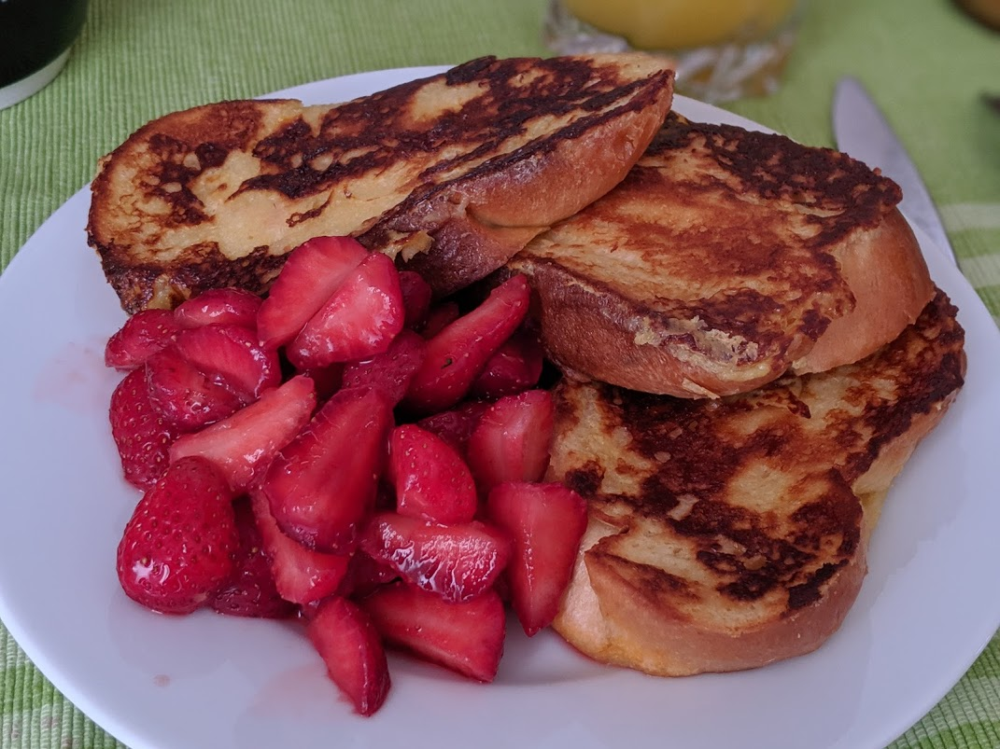

..@..♦.D.

|
Présentation 
|
Blog
|
Recettes
|

Ici avec de la [tresse au beurre](https://fr.wikipedia.org/wiki/Tresse_au_beurre) à la place du pain rassis, accompagné de [fraises parfaites](FraisesParfaites.html)
Pour 3-4 personnes :
Remarque : on peut aussi faire ça avec du pain de mie en grosses tranches, ou encore mieux, avec de la brioche ou de la tresse au beurre.